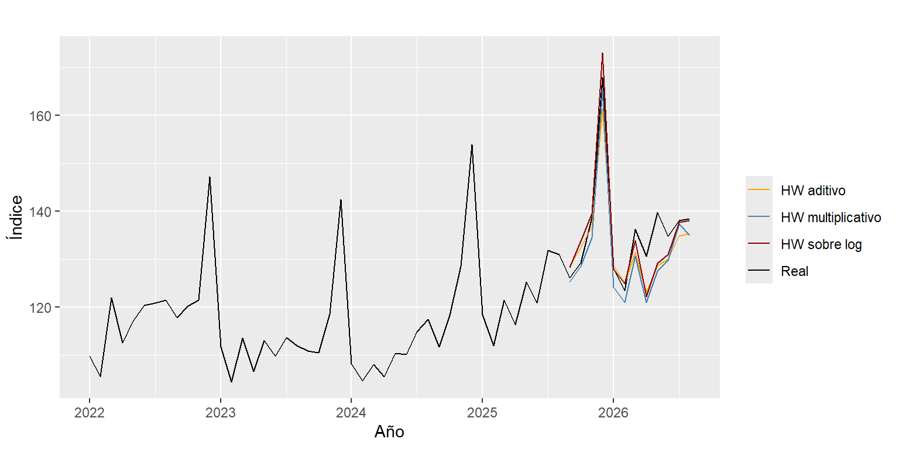
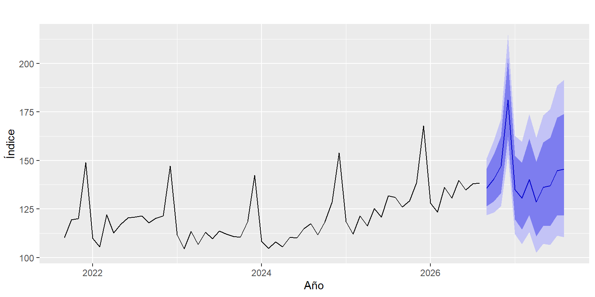

Capítulo 9 Suavizamiento exponencial y Holt-Winters
A partir de este capítulo empieza la Unidad 4 y, con ella, los pronósticos. El promedio móvil del capítulo 3 le da el mismo peso a todos los meses que promedia. El suavizamiento exponencial también promedia el pasado, pero da más peso a los meses recientes y cada vez menos a los antiguos.
Hay tres versiones, y cada una agrega un componente de la serie:
| Método | Qué sigue | Parámetro que lo controla |
|---|---|---|
| Suavizamiento simple | Solo el nivel | \(\alpha\) (nivel) |
| Holt | Nivel y tendencia | \(\alpha\) y \(\beta\) (tendencia) |
| Holt-Winters | Nivel, tendencia y estacionalidad | \(\alpha\), \(\beta\) y \(\gamma\) (estacionalidad) |
Los parámetros van de 0 a 1. Cerca de 1, el modelo se ajusta rápido a lo último que pasó. Cerca de 0, el componente casi no cambia en el tiempo. R los estima solo, buscando los valores que mejor reproducen la serie.
Holt-Winters puede tratar la estacionalidad de dos formas. En la aditiva, el pico de diciembre suma siempre más o menos lo mismo. En la multiplicativa, el pico crece con el nivel de la serie. En el capítulo 6 se vio que esta serie se comporta como el segundo caso. Por eso también se prueba Holt-Winters aditivo sobre el logaritmo, que equivale a una estacionalidad proporcional.
9.1 Procedimiento
- Separar la serie en un periodo de entrenamiento y uno de prueba.
- Ajustar los modelos con el periodo de entrenamiento y pronosticar el periodo de prueba.
- Comparar los pronósticos con los datos reales y elegir el modelo con menor error.
- Volver a ajustar el modelo elegido con toda la serie y pronosticar los siguientes 12 meses.
9.2 Entrenamiento y prueba
Se guardan los últimos 12 meses (septiembre de 2025 a agosto de 2026) como prueba. Así la evaluación cubre un año completo, incluido diciembre, el mes más difícil de pronosticar.
9.3 Modelos
Se ajustan cinco modelos de suavizamiento. Como punto de comparación se agrega el modelo ingenuo estacional de la propuesta, que pronostica cada mes con el valor del mismo mes del año anterior.
modelos <- list(
"Simple" = ses(train, h = h),
"Holt" = holt(train, h = h),
"Holt-Winters aditivo" = hw(train, h = h, seasonal = "additive"),
"Holt-Winters multiplic." = hw(train, h = h, seasonal = "multiplicative"),
"Holt-Winters sobre log" = hw(train, h = h, seasonal = "additive", lambda = 0),
"Ingenuo estacional" = snaive(train, h = h)
)9.4 Comparación
Cada pronóstico se compara con los datos reales de la prueba usando dos medidas de error: el RMSE, en puntos del índice, y el MAPE, que es el error promedio en porcentaje.
errores <- t(sapply(modelos, function(m) accuracy(m, test)["Test set", c("RMSE", "MAPE")]))
knitr::kable(errores[order(errores[, "RMSE"]), ], digits = 2,
caption = "Error de cada modelo en el periodo de prueba.")| RMSE | MAPE | |
|---|---|---|
| Holt-Winters sobre log | 4.64 | 2.45 |
| Holt-Winters aditivo | 5.12 | 3.08 |
| Holt-Winters multiplic. | 5.43 | 3.13 |
| Ingenuo estacional | 12.14 | 8.72 |
| Holt | 13.82 | 6.19 |
| Simple | 15.15 | 7.42 |
autoplot(window(y, start = 2022), series = "Real") +
autolayer(modelos[["Holt-Winters aditivo"]]$mean, series = "HW aditivo") +
autolayer(modelos[["Holt-Winters multiplic."]]$mean, series = "HW multiplicativo") +
autolayer(modelos[["Holt-Winters sobre log"]]$mean, series = "HW sobre log") +
scale_colour_manual(values = c(Real = "black", "HW aditivo" = "orange",
"HW multiplicativo" = "steelblue", "HW sobre log" = "darkred")) +
labs(x = "Año", y = "Índice", colour = "")
Figura 9.1: Pronósticos de los tres modelos Holt-Winters en el periodo de prueba.
La Tabla 9.1 muestra tres grupos:
- Simple y Holt fallan por mucho (MAPE de 7,4 % y 6,2 %). No tienen estacionalidad, así que pronostican una línea casi recta y no ven el pico de diciembre.
- El ingenuo estacional también queda lejos (8,7 %), porque repite el año anterior y no recoge el crecimiento de la serie.
- Los tres Holt-Winters bajan el error a cerca del 3 %. La diferencia la hace la estacionalidad.
El mejor es Holt-Winters sobre el logaritmo, con un MAPE de 2,45 %. En la Figura 9.1 es el que mejor acierta el pico de diciembre de 2025. Los otros dos se quedan cortos. Los tres fallan de forma parecida entre abril y mayo de 2026, cuando las ventas subieron más de lo que mostraba su historia.
9.5 Modelo elegido
Se vuelve a ajustar Holt-Winters sobre el logaritmo, ahora con toda la serie, y se pronostican los siguientes 12 meses:
final <- hw(y, h = 12, seasonal = "additive", lambda = 0)
round(final$model$par[c("alpha", "beta", "gamma")], 3)## alpha beta gamma
## 0.698 0.001 0.000Los parámetros se leen así:
- \(\alpha\) alto: el nivel se ajusta rápido a los últimos meses.
- \(\beta\) y \(\gamma\) casi en cero: el ritmo de crecimiento y el patrón de cada mes casi no cambian en el tiempo. Esto coincide con la descomposición del capítulo 7, que mostró una tendencia constante y una estacionalidad estable.
9.6 Pronóstico

Figura 9.2: Pronóstico de septiembre de 2026 a agosto de 2027 con intervalos de 80 % y 95 %.
knitr::kable(as.data.frame(final), digits = 1,
col.names = c("Pronóstico", "Inf. 80 %", "Sup. 80 %", "Inf. 95 %", "Sup. 95 %"),
caption = "Pronóstico del índice de ventas reales (2019 = 100).")| Pronóstico | Inf. 80 % | Sup. 80 % | Inf. 95 % | Sup. 95 % | |
|---|---|---|---|---|---|
| Sep 2026 | 135.7 | 126.5 | 145.7 | 121.8 | 151.2 |
| Oct 2026 | 140.7 | 129.0 | 153.3 | 123.3 | 160.5 |
| Nov 2026 | 147.2 | 133.3 | 162.6 | 126.4 | 171.3 |
| Dec 2026 | 181.2 | 162.1 | 202.4 | 152.9 | 214.7 |
| Jan 2027 | 135.0 | 119.5 | 152.5 | 112.1 | 162.6 |
| Feb 2027 | 130.6 | 114.5 | 149.0 | 106.9 | 159.7 |
| Mar 2027 | 140.2 | 121.8 | 161.3 | 113.1 | 173.8 |
| Apr 2027 | 128.7 | 110.9 | 149.4 | 102.5 | 161.7 |
| May 2027 | 136.1 | 116.3 | 159.3 | 107.0 | 173.1 |
| Jun 2027 | 137.0 | 116.2 | 161.6 | 106.5 | 176.4 |
| Jul 2027 | 144.8 | 121.9 | 172.1 | 111.3 | 188.5 |
| Aug 2027 | 145.5 | 121.6 | 174.1 | 110.5 | 191.5 |
El modelo espera que el índice siga creciendo. El pico de diciembre de 2026 queda alrededor de 181 y en agosto de 2027 el índice llegaría a cerca de 145, un 5 % más que en agosto de 2026. Los intervalos se abren a medida que el pronóstico se aleja, porque la incertidumbre se acumula mes a mes.
El modelo supone que la tendencia y la estacionalidad de los últimos años se mantienen. Si llega un choque como el de 2020 o una desaceleración como la de 2023, el pronóstico no lo va a anticipar.